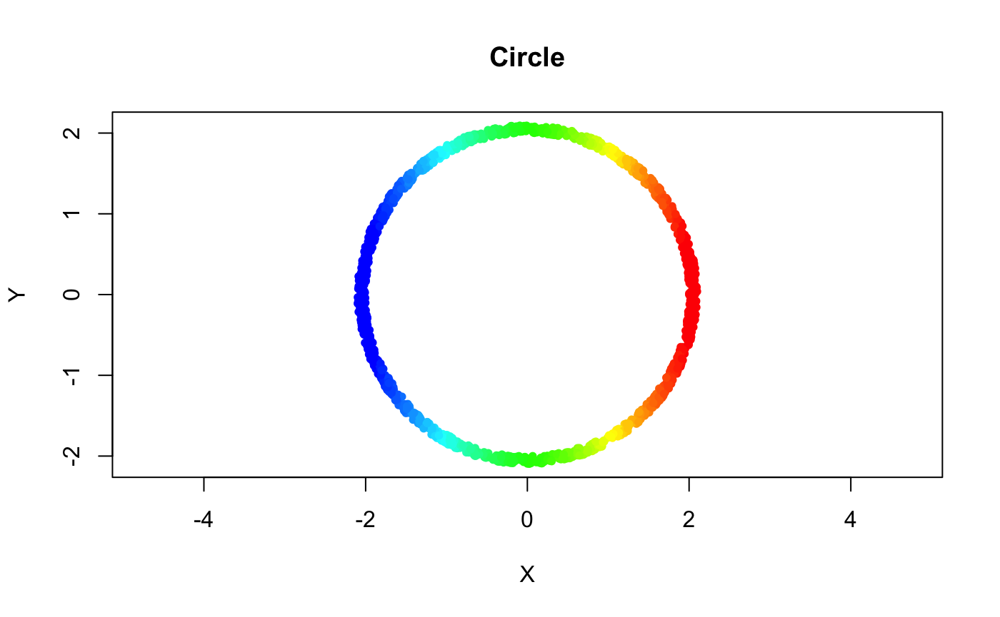

Using the Mapper package
Matt Piekenbrock
UsingMapper.RmdConsider a noisy sampling of points along the perimeter of a circle in \(\mathbb{R}^2\)
set.seed(1234)
## Generate noisy points around the perimeter of a circle
n <- 1500
t <- 2*pi*runif(n)
r <- runif(n, min = 2, max = 2.1)
noisy_circle <- cbind(r*cos(t), r*sin(t))
## Plot the circle
plot(noisy_circle, pch = 20, asp = 1, xlab = "X", ylab = "Y", main = "Circle")
Interactively building the Mapper
Internally, Mapper uses R6 classes to efficiently compute the simplicial complex. One of the nice benefits of R6 is that it allows method chaining. To demonstrate this, consider a very simplified interpretation of the Mapper pipeline: 1. “Filter” the data via a reference map 2. Equip the filter space with a cover 3. Construct the k-skeleton
These steps are demonstrated below using the noisy_circle data set above with the Mapper package.
The first step is to create a filter of the data. Below is an example of a very simple filter mentioned in the original paper that builds the mapper by looking at the distance from every point \(x\) to the point with left-most coordinate, \(p\), i.e.
## 1. Specify a filter function for the data
left_pt <- noisy_circle[which.min(noisy_circle[, 1]),]
f_x <- apply(noisy_circle, 1, function(pt) (pt - left_pt)[1])## Bin the data onto a sufficiently high-resolution rainbow gradient from blue (low) to red (high)
rbw_pal <- rev(rainbow(100, start = 0, end = 4/6))
binned_idx <- cut(f_x, breaks = 100, labels = F)
plot(noisy_circle, pch = 20, asp = 1, col = rbw_pal[binned_idx], xlab = "X", ylab = "Y", main = "Circle")
Building the cover
Once the filter function has been applied to the data, a cover must be constructed over the function values. Here, a simple rectangular cover with fixed centers is used.
The only required argument is the filter point values themselves; cover-specific parameters may optionally be supplied at initialization, or set via assignment.
If you supply a single value when the filter dimensionality \(> 1\), the argument is recycled. The cover summary can be printed as follows:
## Cover: (typename = Fixed Rectangular, number intervals = [5], percent overlap = [0.2]%)Once parameterized, the cover may be explicitly constructed via the construct_cover member function before sending to Mapper. The construct_cover function uses the given set of parameters to populate the intersection between the open sets in the cover and the given filter data. If not explicity called, the cover will be constructed when the Mapper reference is made. Mapper accepts any cover that is a valid CoverRef R6 class. If you want to use a cover outside of the ones offers by the package, feel free to derive a new type cover class (and consider submitting a pull request!).
## 3. Apply a partial clustering to the data subsets indexed by the cover
m <- Mapper::MapperRef$new(noisy_circle)
m$cover <- rec_cover$construct_cover()The final step to create a Mapper is to construct the k-skeleton. This step requires a different set of procedures, based on k.
Building the 0-skeleton
Since the definition of a k-skeleton is inductive, the first step is to construct the \(0\)-skeleton. This amounts to applying a partial clustering over [subsets of] the data within a given metric space, indexed by the level sets given by cover. The choice of clustering algorithm, metric, hyper-parameters, etc. is completely up to the user–the only requirement is that the function take as input at least the data X and a vector of indices idx\(\subset \{1, 2, \dots, n\}\) and return an integer vector giving a partitioning on the subset idx of the data X. An example of using a custom clustering function using the parallelDist and fastcluster packages is given below, wherein the [single linkage criterion] is used to build a cluster hierarchy, and then a histogram-based heuristic is used to set the cut value. The heuristic is similar to the idea discussed in Section 3.1 of the original Mapper paper.
## Loading required package: parallelDistcustom_clustering_f <- function(X, idx, num_bins){
dist_x <- parallelDist::parallelDist(X[idx,], method = "euclidean")
hcl <- fastcluster::hclust(dist_x, method = "single")
cutoff_first_bin(hcl, num_bins = num_bins)
}
m$clustering_algorithm <- custom_clustering_fThe user may alternatively choose from the list of widely-supported linkage criteria and distance measures used in hierarchical clustering with the set_clustering_algorithm and set_distance_measure functions, respectively.
For a complete list of the available linkage criteria and distance/similarity measures, see ?stats::hclust and ?proxy::pr_DB, respectively.
Once these have been set, the \(0\)-skeleton is computed with the compute_vertices function. All parameters passed to compute_vertices are passed via ... as hyper-parameters to the clustering algorithm.
The parameters of these functions may be fine-tuned to allow adjusting only specific parts of the skeleton at a time.
Building the 1-skeleton
The \(1\)-skeleton is computed analogously.
Generally, this is sufficient. However, if the user wishes too, the \(k\)-skeleton for any \(k > 1\) can also be computed.
All the methods can chained.
m <- MapperRef$new(noisy_circle)$
use_cover(filter_values = matrix(f_x), type = "fixed rectangular",
number_intervals = 5L, percent_overlap = 0.20)$
use_clustering_algorithm(cl = "single", num_bins = 10)$
use_distance_measure(measure = "euclidean")$
compute_vertices()$
compute_edges()The output of Mapper is a simplicial complex, or in the simplest case (when \(k = 1\)), a topological graph. Internally, the complex is stored in a Simplex Tree. The underlying simplex tree is exported as an Rcpp Module, and is accessible via the $simplicial_complex member.
## Simplex Tree with (8, 1) (0, 1)-simplices## 0 (h = 0):
## 1 (h = 0):
## 2 (h = 0):
## 3 (h = 1): .( 6 )
## 4 (h = 0):
## 5 (h = 0):
## 6 (h = 0):
## 7 (h = 0):Visualizing the Mapper
The grapher package provides a htmlwidget implementation of Ayasdi’s Apache-licensed grapher library, which can be used to visualize the Mapper network, with options to support nice things like D3 force. The $as_grapher function provides a few default coloring and sizing options.
To customize the visualization, refer to graphers documentation.
Accessing other members
The full help pages for are accessible via the ?MapperRef page or the additional reference pages on the documentation website.
Below is a brief summary:
## num [1:1500, 1] 3.644 0.615 0.51 0.611 3.439 ...## chr [1:5] "(1)" "(2)" "(3)" "(4)" "(5)"## List of 5
## $ (1): int [1:436] 2 3 4 6 10 12 27 31 34 41 ...
## ..- attr(*, "bounds")= num [1:2] -0.000841 0.839663
## $ (2): int [1:221] 9 11 15 17 21 22 33 42 43 45 ...
## ..- attr(*, "bounds")= num [1:2] 0.838 1.678
## $ (3): int [1:195] 8 13 18 20 25 32 36 38 49 50 ...
## ..- attr(*, "bounds")= num [1:2] 1.68 2.52
## $ (4): int [1:216] 16 19 23 26 29 35 37 40 55 59 ...
## ..- attr(*, "bounds")= num [1:2] 2.52 3.36
## $ (5): int [1:433] 1 5 7 14 24 28 30 39 51 61 ...
## ..- attr(*, "bounds")= num [1:2] 3.35 4.19## function (X, idx, num_bins = num_bins.default)